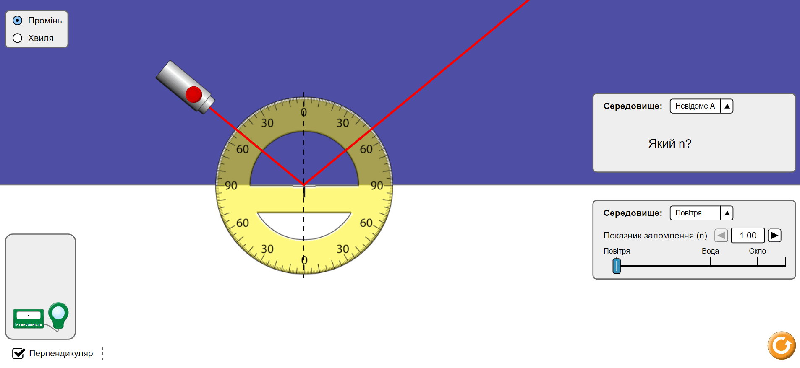
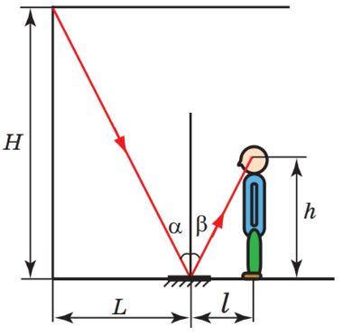

4. За допомогою транспортира виміряйте кут падіння та кут відбивання.

5. Повторіть дії ще кілька разів, установлюючи джерело світла під різними кутами до поверхні відбивання.
Далі розраховуємо й записуємо до таблиці:
№
Кут падіння α, градус
Кут відбивання β, градус
1
2
3
4
5
Аналіз експерименту та його результатів
Проаналізуйте експеримент і його результати. Сформулюйте висновок, у якому зазначте:
1) яке співвідношення між кутом падіння світлового променя та кутом його відбивання ви встановили;
2) чи виявилися результати дослідів абсолютно точними, а якщо ні, то в чому причини похибки.
Творче завдання
Скориставшись рисунком, продумайте та запишіть план проведення експерименту з визначення висоти кімнати за
допомогою плоского дзеркала; зазначте необхідне обладнання. У разі можливості проведіть експеримент.

Завдання «із зірочкою»
Для кожного досліду оцініть відносну похибку експерименту за формулою: